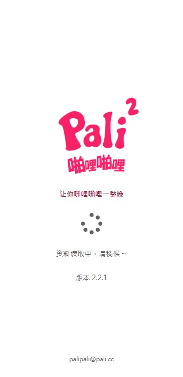

Palipali 用了大半年：双板块是真香，但缓存管理的烦恼没停过
从一个桌面图标装到现在，Palipali 把动漫和漫画塞进一个 App 的想法到底靠不靠谱？长期用下来哪些地方越用越顺手，哪些坑踩了又踩。
装 Palipali 的起因很简单——那时候手机上同时挂着三个看漫追番的应用，一个专门追新番，一个囤漫画，还有一个备用播放器。桌面左下角挤得像开了杂货铺。朋友随口提了一句"试试这个，一个顶俩"，我就去它的palipali官网翻了一下，从官方下载拿了安装包。没想过它会在我手机上待到现在。

最开始没当回事的设计，后来成了离不开的
它最显眼的那个卖点——动漫和漫画整合在一个应用里——我其实是带着怀疑装的。两个板块、两种节奏、完全不同的用户习惯，塞在同一个底部导航里不打架吗？结果用了一周我就发现，不打架，而且省心得很。
底部导航给动漫影视留了两个 tab（长片和短片），漫画则藏在"发现" tab 的顶部标签里。刚开始我觉得这个藏法有点反直觉——漫画为什么不占一个独立 tab？但追更了两三个月之后我明白过来了：漫画和动漫的使用频率对我来说差别太大。新番每周追，漫画可能一口气囤好几话再慢慢看。漫画放在"发现"体系下而不是平级主板块，反而是个聪明的安排——不占底部宝贵的 tab 名额，又不会让想找的人找不到。
更重要的是跨板块的统一管理。收藏夹、追更订阅、观看记录，动漫和漫画是打通的。某天早上收到一条推送，点进去发现是我追的一部国漫更新了三话，而下午另一条推送是一部番的新一集。两种内容、一个入口、一套通知。这一点用得越久越觉得好——以前三个应用各自推各自的，早上打开通知栏恨不得被淹没。
还有一点是启动速度。安装包只有 24MB，冷启动基本不卡，旧机型也能秒进主界面。我见过太多几十上百 MB 的视频应用，点开先闪三秒开屏广告，再加载一秒欢迎动画，最后还弹个会员推广。Palipali 没有这些。真的没有——没有开屏广告，没有弹窗，翻页途中也不会突然蹦个悬浮窗出来。这点你觉得可能没什么大不了的，但当你每天打开三四次、持续半年之后，就会发现"干净"本身就是一种体验。
最开始没在意的问题，后来反复踩坑
真正让我头疼的，是离线缓存。
Palipali 的缓存功能本身做得很完整：支持动漫和漫画两类内容、并行下载、断点续传、自动清理策略、存储空间统计页面也做得明明白白。它的palipali文档里把缓存管理的每一个细节都讲了——总占用、每部作品大小、临时文件清理、甚至给出了一个典型的空间使用概览：
存储使用概览：
├── Palipali 应用本体：24 MB
├── 离线缓存（动漫）：1.2 GB
├── 离线缓存（漫画）：3.5 GB
├── 临时文件：86 MB
├── 下载记录索引：12 MB
└── 总占用：4.8 GB这些信息查起来方便，但是缓存本身的稳定性，我只能用一言难尽来形容。
第一种坑是卡在 0%。点了缓存按钮，任务进了队列，然后就不动了。几十秒过去了还是 0% 已下载。刚开始我以为是网络的问题，切换 WiFi 再切回来，还是不动。后来去设置里把并行下载数从默认的 10 降到 3，稍微好一点，但偶发性还是有。
第二种坑是下载到一半停住。一部 200 话的漫画下到 120 话卡住，或者一部动漫下载到 80MB 不动了。理论上它支持断点续传，但实际体验下来，动漫缓存的续传还过得去，漫画缓存（图片）的续传就没那么靠谱——有些图源服务器根本不支持续传，断了就是断了，只能从头再来。我试过在缓存管理里手动暂停再恢复，有时候能救回来，有时候不行。
第三种坑最离谱——缓存完成了，显示"✅ 已缓存"，但离线点开却加载不出来或者直接黑屏。查了一下原因，可能是下载中断没正确恢复、版本升级后索引不匹配、甚至是我自己用系统文件管理器手贱删了缓存目录里的东西。最稳的解决办法只有一个：删掉这部的缓存，重新下载。
这里必须说一个反直觉的发现：文档里明确警告过"不要用系统文件管理器手动进入 Palipali 的目录删东西"，但我最开始没当回事——觉得自己清一下目录里的冗余文件怎么了？直到有天早上起来，发现收藏夹里三部昨天还能看的动漫全部变成了"加载失败"。那次教训之后我就老老实实地只走应用内的缓存管理界面了。
哪个功能成了每天离不开的
追更订阅。真的，这是我现在每天打开 Palipali 的唯一理由。
以前追番追漫要靠自己记着"这个番每周四更新""这部漫画大概每两周更一话"，想不起来就忘了。现在把想看的都加进收藏并开启订阅，每天早上打开应用就是最新更新列表，按时间排序，点进来看就行。而且动漫和漫画的更新在同一个列表里——不用分别去三个应用查。
哪个功能碰都没再碰过
自动下载。订阅更新后 WiFi 自动缓存听起来挺美好，但我试了三次放弃了。自动下载的触发条件太苛刻：自动下载总开关要开、必须在 WiFi 环境、WiFi 不能断、网络要稳、并行下载数不能满、存储空间不能紧张——任何一个条件不满足，自动下载就静默失败。而且失败了它也不告诉你，等你想起来去查的时候发现更新已经出来好几天了。
现在我都是手动触发下载：看到订阅里有新更新 → 点进去 → 手动点缓存 → 看着进度条走完。多花半分钟，但心里踏实。
去留结论：不会卸载，但缓存这块我持续观望
说实话，刚装的时候我对这款应用是有点高估的——觉得"终于找到一款能把动漫漫画整合好的完美 App"。用了半年之后判断变得理性了：它确实解决了一个真实的痛点（一个顶俩），做得也足够干净没有广告，启动速度快、跨板块统一管理这些设计都很加分。但缓存管理的稳定性问题到现在也没彻底解决，卡 0%、断半截、缓存好放不出来这三种表现我都反复遇到过。
什么时候会卸载？两种情况。第一，如果哪天我发现有一款应用在双板块整合做得一样好、同时缓存稳定性更靠谱的，我可能会换。第二，如果缓存相关的 bug 在接下来的版本里持续恶化——比如本来是偶发的卡 0% 变成了经常出现、断点续传彻底不管用了——那我会把收藏导出、卸载、重新装回以前那三个应用。
但目前不会。一个桌面图标、一套追更订阅、干净无广告、启动秒进——这几点加在一起的体验，暂时没找到替代品。
至于缓存那块，我打算继续观察，有问题就删缓存重下。反正确认过了——删缓存不会影响收藏状态、不会丢观看记录、追更订阅也不受影响，只是那部作品暂时离线看不了而已，下次想看重新下载就行。这个设计本身倒是挺稳的。
如果还没装过、正在犹豫要不要试试的朋友，我可以给一个中肯的建议：如果你同时追番又追漫，值得试；如果你只看其中一类，可能没必要——市面上专注做动漫或专注做漫画的应用各有各的长处。而对于已经在用的朋友，我强烈建议去翻一下它的文档，缓存管理、版本选择、常见问题排查这些在里面讲得非常细致，能帮你避开不少我踩过的坑。
这款应用的资料我同步维护在三个代码托管平台方便不同网络环境下获取：GitHub 仓库是主版本，Gitee 作为国内的同步镜像保证访问速度，GitCode 那边我单独放了一份备份以防万一。无论你习惯哪个平台，代码和文档的内容都是同步更新的。